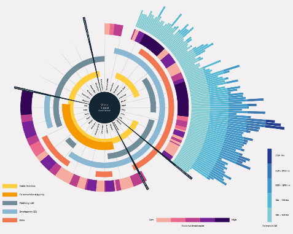

import altair as alt
from altair.datasets import data
source = data.cars()
alt.Chart(source).mark_circle(size=60).encode(
x='Horsepower',
y='Miles_per_Gallon',
color='Origin',
tooltip=['Name', 'Origin', 'Horsepower', 'Miles_per_Gallon']
).interactive()1 Why visualize data?
1.1 What is data visualization?
At its core, data visualization is about representing data with graphical elements such as the position of a point, the length of a bar, or the color of a line. We usually visualize data for two main purposes: or by communicating what we have learned. While we often use visualization , it can also be more exploratory and .
In this sense, we can that helps us gain and communicate data insights effectively. This role is equally relevant when an analysis comes from another person or from a machine, such as a generative AI agent: in either case, the goal is to support human understanding. By supporting both exploration and communication, .
1.2 A few examples
1.3 A few examples
brush = alt.selection_interval()
points = alt.Chart(source).mark_point().encode(
x='Horsepower:Q',
y='Miles_per_Gallon:Q',
color=alt.when(brush).then("Origin:N").otherwise(alt.value("lightgray"))
).add_params(
brush
)
bars = alt.Chart(source).mark_bar().encode(
y='Origin:N',
color='Origin:N',
x='count(Origin):Q'
).transform_filter(
brush
)
points & bars1.4 A few examples
import altair as alt
import pandas as pd
source = pd.DataFrame(
[
{"a": "a1", "b": "b1", "c": "x", "p": "0.14"},
{"a": "a1", "b": "b1", "c": "y", "p": "0.60"},
{"a": "a1", "b": "b1", "c": "z", "p": "0.03"},
{"a": "a1", "b": "b2", "c": "x", "p": "0.80"},
{"a": "a1", "b": "b2", "c": "y", "p": "0.38"},
{"a": "a1", "b": "b2", "c": "z", "p": "0.55"},
{"a": "a1", "b": "b3", "c": "x", "p": "0.11"},
{"a": "a1", "b": "b3", "c": "y", "p": "0.58"},
{"a": "a1", "b": "b3", "c": "z", "p": "0.79"},
{"a": "a2", "b": "b1", "c": "x", "p": "0.83"},
{"a": "a2", "b": "b1", "c": "y", "p": "0.87"},
{"a": "a2", "b": "b1", "c": "z", "p": "0.67"},
{"a": "a2", "b": "b2", "c": "x", "p": "0.97"},
{"a": "a2", "b": "b2", "c": "y", "p": "0.84"},
{"a": "a2", "b": "b2", "c": "z", "p": "0.90"},
{"a": "a2", "b": "b3", "c": "x", "p": "0.74"},
{"a": "a2", "b": "b3", "c": "y", "p": "0.64"},
{"a": "a2", "b": "b3", "c": "z", "p": "0.19"},
{"a": "a3", "b": "b1", "c": "x", "p": "0.57"},
{"a": "a3", "b": "b1", "c": "y", "p": "0.35"},
{"a": "a3", "b": "b1", "c": "z", "p": "0.49"},
{"a": "a3", "b": "b2", "c": "x", "p": "0.91"},
{"a": "a3", "b": "b2", "c": "y", "p": "0.38"},
{"a": "a3", "b": "b2", "c": "z", "p": "0.91"},
{"a": "a3", "b": "b3", "c": "x", "p": "0.99"},
{"a": "a3", "b": "b3", "c": "y", "p": "0.80"},
{"a": "a3", "b": "b3", "c": "z", "p": "0.37"},
]
)
alt.Chart(source, width=200, height=alt.Step(8)).mark_bar().encode(
alt.Y("c:N").axis(None),
alt.X("p:Q").title(None).axis(format="%"),
alt.Color("c:N").title("settings").legend(orient="bottom", titleOrient="left"),
alt.Row("a:N").title("Factor A").header(labelAngle=0),
alt.Column("b:N").title("Factor B"),
)1.5 A few examples

1.6 A few examples
1.7 A few examples

1.8 Why bother?
Why do we visualize data instead of just showing raw numbers in tables? Let’s find out in an exercise!
Table 1.1: This is a slightly modified version of Anscombe’s quartet, which was put together by statistician Francis Anscombe in the 70s.
Table 1.2: Summary statistics of the modified Anscombe datasets.
Figure 1.1: Visualization of the modified Anscombe datasets revealing the pattern in the underlying observations.
1.9 Why are visuals easier to interpret than numbers?
To understand why visualizations are so powerful, it is helpful to remember that to answer a question, we often have to put the data in a format that is easy for us humans to interpret. Because , .
On the other hand, , so such as colors and distances without much conscious cognitive effort.
In practice, this means that of the same data.
A modern take on Anscombe’s quartet
For a more recent and dynamic illustration of how graphical representations are much easier for us to interpret, check out the Datasaurus Dozen animation below. It displays several different datasets, all with nearly the same mean, standard deviation and correlation between X and Y, but looking at the data graphically shows us how different these datasets actually are:

Figure 1.2: The Datasaurus Dozen: Datasets with near identical summary statistics but widely different distributions.
Now that you have experienced the benefits of visualizing data, let’s figure out how to create such visualizations!